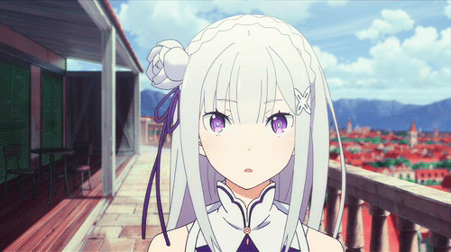
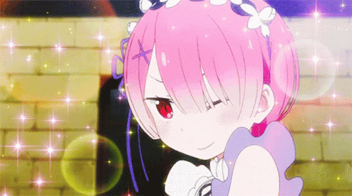
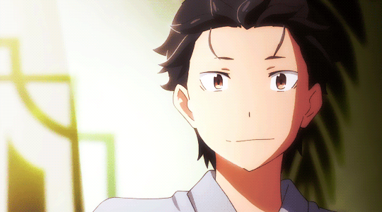

Re:Zero kara Hajimeru Isekai Seikatsu
- Publicado el 13/Mayo/23
Sinópsis
Esta historia se centra en Subaru Natsuki, un estudiante con aspecto ser alguien indeciso y que, posiblemente haya fallado en la vida, quien es misteriosamente invocado a un mundo de fantasía medieval. Investigando un poco el lugar se mete en problemas en un callejón, hasta que una hermosa chica de cabello plateado lo salva, a partir de aquí, Subaru buscará devolverle el favor como sea, hasta que son asesinados repentinamente tanto el como la chica, sin embargo, ahí descubre que tiene la habilidad de volver en el tiempo en un punto especifico, pero él es único que lo recuerda.

Reseña
Empezamos bien, un anime donde un protagonista es un joven de preparatoria que es
llevado a un mundo de fantasía, algo bastante cliché para muchos, ya que hay
muchísimas historias del mismo tipo, y ciertamente cuando ves muchas veces la misma
premisa, ya te de una pereza el ver la obra y empiezas juzgarla como un anime genérico
más del
montón; pues justamente con esa visión me miré Re:Zero, y debo decir que estoy muy feliz
de haberme equivocado.
El inicio es el típico, el prota aparece en ese mundo porque si, pasa un suceso y conoce
a la heroína de la historia, la ayuda porque es alguien bondadoso (y terco), y así
continuadamente, pero la diferencia aquí es el cómo te cuenta los sucesos Re:Zero.
Empezando por recalcarnos que nuestro querido protagonista, es un completo inútil.
Asi sin más, nada de que es el más poderoso de ese mundo ni así, Subaru simplemente no
se le da bien hacer eso, tiene buena voluntad, pero no sabe ni siquiera como leer los
carteles, y busca desesperadamente ayudar a una chica, procedente de ahí, a buscar algo
que no sabe, en una ciudad que no conoce. Yo no veo el problema aquí. Durante el proceso
de buscar ese objeto, son asesinados, justo aquí descubrimos la habilidad estrella de
Subaru: El regreso de la muerte.
A partir de aquí sucederán varias cosas, no siempre será lo mismo, ya que dependiendo de
lo que haga Subaru, puede cambiar el resultado a su favor, y aunque esto parezca algo
muy genial, en la obra te remarcan que es algo horrible para nuestro protagonista por el
daño psicológico que le deja. Y fue aquí donde me interese mucho en este anime, tenía
mucha curiosidad sobre que aventuras vivirá Subaru, si llegará a lograr lo que se proponga, o
sufrirá en el intento (aunque eso ya está muy asegurado).

Conclusión
Sin duda el misterio de lo que sucederá, así como lo que el anime te explica acerca de su mundo, lo hace una obra muy entretenida de ver, además de su gran banda sonora y actores de voz, sus personajes, los cuales ya les agarras cariño apenas se presentan; todo esto combinado ha hecho que este anime del género Isekai sea mi favorito sin duda. Pero eso ya dependerá de como te parezca a ti, ojalá le des una oportunidad, eso sí, aguanta un poco porque puede que el principio te parezca un tanto frustrante y tedioso, pero sin duda lo vale completamente.
